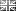
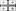
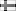
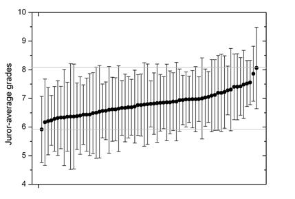
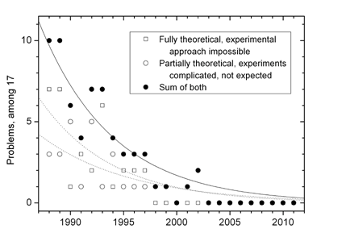
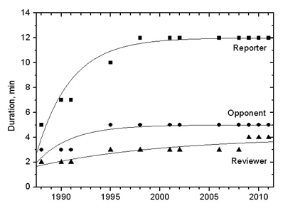
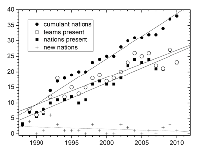

Statistics
There are some hidden, persistent regularities behind the apparently independent and randomly scattered numbers. Relying on multiple sources, this section provides an insight into the long-term IYPT trends and statistics.
Growth of the IYPT
The table presents the growth of the IYPT in terms of participating nations, teams, grading jurors, and given grades. Click on the headers to have the table sorted by any desired parameter.
| Year | NTO | NTP | NTG | NCO | NJ | Nst | NG | NJ-FIT | NG-FIT | ⟨SP⟩/6 |
|---|---|---|---|---|---|---|---|---|---|---|
| 1988 | 31 | 31 | 0 | 3 | -- | 0 | -- | 0 | 0 | -- |
| 1989 | 8 | 44 | 8 | 7 | -- | 8 | -- | 21 | 148 | 9.04 |
| 1990 | 6 | 6 | 6 | 5 | -- | 27 | -- | 16 | 501 | 7.04 |
| 1991 | 7 | 9 | 7 | 6 | -- | 24 | -- | 19 | 445 | 8.13r |
| 1992 | 12 | 12 | 12 | 10 | -- | 52 | -- | 32 | 965 | 7.86 |
| 1993 | 19 | 19 | 18 | 11 | -- | 84 | -- | 48 | 1633 | 6.72r |
| 1994 | 12 | 12 | 12 | 11 | -- | 49 | -- | 32 | 909 | 7.12r |
| 1995 | 15 | 15 | 15 | 12 | -- | 57 | -- | 40 | 1058 | 7.16 |
| 1996 | 13 | 13 | 13 | 10 | -- | 51 | -- | 34 | 947 | 7.07r |
| 1997 | 15 | 15 | 15 | 11 | -- | 57 | -- | 40 | 1058 | 7.20 |
| 1998 | 18 | 18 | 18 | 16 | -- | 66 | -- | 48 | 1225 | 7.28 |
| 1999 | 19 | 19 | 19 | 17 | -- | 69 | -- | 50 | 1281 | 7.15 |
| 2000 | 17 | 17 | 17 | 16 | -- | 63 | -- | 45 | 1169 | 6.84 |
| 2001 | 18 | 18 | 18 | 16 | -- | 93 | -- | 48 | 1726 | 7.28 |
| 2002 | 20 | 20 | 20 | 18 | -- | 103 | -- | 53 | 1912 | 6.79 |
| 2003 | 23 | 23 | 23 | 22 | -- | 118 | -- | 61 | 2190 | 6.87 |
| 2004 | 26 | 26 | 26 | 24 | -- | 133 | -- | 69 | 2469 | 7.12r |
| 2005 | 25 | 25 | 25 | 23 | 61 | 128 | -- | 66 | 2376 | 7.21 |
| 2006 | 26 | 26 | 25 | 24 | -- | 128 | -- | 66 | 2376 | 6.89 |
| 2007 | 22 | 22 | 22 | 21 | -- | 113 | -- | 58 | 2097 | 6.47 |
| 2008 | 21 | 21 | 21 | 21 | -- | 108 | -- | 56 | 2005 | 6.83 |
| 2009 | 27 | 27 | 27 | 27 | -- | 138 | -- | 72 | 2561 | 6.26 |
| 2010 | 23 | 23 | 23 | 23 | 68 | 119 | 2514 | 61 | 2209 | 6.72 |
| 2011 | 21 | 21 | 21 | 21 | 56 | 108 | 1935 | 56 | 2005 | 6.22 |
| 2012 | 28 | 28 | 28 | 28 | 80 | 143 | 2619 | 74 | 2654 | 5.59 |
| 2013 | 26 | 26 | 26 | 26 | 73 | 133 | 2829 | 69 | 2469 | 5.84 |
| 2014 | 28 | 28 | 28 | 28 | 67 | 144 | 2559 | 74 | 2673 | 5.75 |
| 2015 | 27 | 27 | 27 | 27 | 68 | 138 | 2448 | 72 | 2561 | 5.65 |
| 2016 | 29 | 29 | 29 | 29 | 77 | 149 | 2499 | 77 | 2766 | 5.59 |
| Total | 582 | 620 | 549 | -- | -- | 2603 | -- | 1457 | 48388 | -- |
The columns are:
- Year of each IYPT event, starting from the 1st IYPT in 1988;
- NTO, officially recognized number of participant teams;
- NTP, teams present in the premises of the IYPT. In 1989, 38 Soviet teams from all 15 constituent Soviet republic attended, but only two of them qualified for the International Finals after semi-official selective fights, in which non-Soviet teams participated irregularly and rather as learning observers. In 1991, observing teams of France and Italy attended, but did not compete at all;
- NTG, teams obtaining official grades from the jury during the IYPT. In 1988, no rigorous official ranking existed and “[t]he organizing committee set no goal to determine winners”. In 1989, only participants of the International Finals on March 31 were considered participants of the 2nd IYPT. Team of Moldova in IYPT 1993 and team of Nigeria in IYPT 2006 were considered official entrants but did not participate in Physics Fights and thus obtained zero scores in the ranking;
- NCO, number of different countries represented by teams. In 1988, this number was considered 3 despite presence of 14 constituent Soviet republics (all except Belarus). In 1989, two Soviet-based teams (from Russia and Ukraine) were both considered from the USSR. In 1990, team of Rīga is counted as Soviet-based despite its complex political status. In 1991, the Moscow-based and the Soviet-combined teams are considered both from the USSR;
- NJ, number of jurors giving grades used in the official ranking. This number is known with an absolute certainty only for 2005 and 2010—2016;
- Nst, number of officially graded IYPT stages. This number is set to 0 in 1988 and to 8 in 1989, albeit there were up to 97 friendly, training selective stages in 1988 and up to 140 in 1989. It is thus known with a very high degree of certainty for each IYPT;
- NG, number of official grades given to teams and used to produce official ranking. This number is known with an absolute certainty only for 2010—2016;
- NJ-FIT, most likely number of jurors giving official grades. This number is obtained by fitting NJ to NTG in the known years and using the best-fit parameters to calculate the expected number in the unknown years. Note that difference between NJ-FIT and NJ in the known years never exceeds 7 persons and on average equals 4 persons (6% average error);
- NG-FIT, most likely number of grades given to the teams to produce official ranking. This number is obtained by fitting NG to Nst in the known years and using the best-fit parameters to calculate the expected number in the unknown years. Note that difference between NG-FIT and NG in the known years never exceeds 360 grades and on average equals 181 grades (7% average error);
- ⟨SP⟩/6, average Sum of Points (in all IYPT rounds, including Semi-Finals and Finals) divided with 6. It is an indication of the average or the most popular grade at the IYPT, although not equal to ⟨G⟩ since reports, oppositions and reviews contribute to SP with different weights.
Forecasts
Since 1988, NCO growed linearly with time. By fitting this dependence, it is easy to forecast the expected number of teams in the future IYPTs. In the past IYPTs, the values of the fit missed the actual values by 1.8 teams on average.
| Year | NC | NJ | Ngr |
| 2017 | 31 | 82 | 10 |
| 2018 | 32 | 84 | 10 |
| 2019 | 33 | 86 | 11 |
| 2020 | 33 | 89 | 11 |
| 2021 | 34 | 91 | 11 |
| 2022 | 35 | 93 | 11 |
Involvement of countries
The table presents a list of countries ordered by the first year of participation in the IYPT. In case of equal years, they are ordered alphabetically. Also presented are number of teams from the country in the Finals, the last year in the Finals, total number of teams from the country, and the last year a team competed.
45 different countries have competed in the IYPT, but 14 of them did not compete in the last two years. No longer existent Soviet Union and Czechoslovakia are listed separately from Russia and Czech Republic, respectively. Click on the headers to have the table sorted by any desired parameter.
| No. | Country | Join | In Finals | Last | All teams | Last |
|---|---|---|---|---|---|---|
| 1. | Bulgaria | 1988 | 2 | 1989 | 19 | 2016 |
| 2. | 1988 | 3 | 1992 | 5 | 1992 | |
| 3. | USSR | 1988 | 7 | 1991 | 35 | 1991 |
| 4. | Germany | 1989 | 2016 | 25 | 2016 | |
| 5. | Hungary | 1989 | 5 | 1997 | 25 | 2016 |
| 6. | Netherlands | 1989 | 3 | 1992 | 19 | 2012 |
| 7. | Poland | 1989 | 9 | 2015 | 34 | 2016 |
| 8. |  UK | 1991 | 0 | -- | 12 | 2016 |
| 9. | Belarus | 1992 | 4 | 2005 | 24 | 2016 |
| 10. |  Georgia | 1992 | 4 | 1999 | 21 | 2016 |
| 11. | Kazakhstan | 1992 | 0 | -- | 1 | 1992 |
| 12. | Moldova | 1992 | 0 | -- | 2 | 1993 |
| 13. | Russia | 1992 | 3 | 2000 | 40 | 2016 |
| 14. | Ukraine | 1992 | 1 | 1993 | 27 | 2016 |
| 15. | 1993 | 5 | 1998 | 25 | 2016 | |
| 16. | Slovakia | 1993 | 3 | 2014 | 24 | 2016 |
| 17. | Uzbekistan | 1993 | 0 | -- | 7 | 1999 |
| 18. | Sweden | 1994 | 0 | -- | 21 | 2016 |
| 19. |  Finland | 1995 | 0 | -- | 10 | 2009 |
| 20. |  Armenia Armenia | 1996 | 0 | -- | 1 | 1996 |
| 21. | Australia | 1998 | 2 | 2007 | 19 | 2016 |
| 22. | Austria | 1998 | 4 | 2011 | 20 | 2016 |
| 23. | Mexico | 1998 | 0 | -- | 7 | 2006 |
| 24. | United States | 1999 | 1 | 2005 | 8 | 2016 |
| 25. | Croatia | 2002 | 2 | 2008 | 13 | 2016 |
| 26. | South Korea | 2002 | 8 | 2013 | 16 | 2016 |
| 27. | Switzerland | 2002 | 2 | 2016 | 16 | 2016 |
| 28. | Indonesia | 2003 | 0 | -- | 8 | 2013 |
| 29. | New Zealand | 2003 | 4 | 2010 | 13 | 2016 |
| 30. | Brazil | 2004 | 0 | -- | 10 | 2016 |
| 31. | Cyprus | 2004 | 0 | -- | 2 | 2007 |
| 32. | Kenya | 2004 | 0 | -- | 9 | 2015 |
| 33. | Nigeria | 2006 | 0 | -- | 8 | 2015 |
| 34. | China | 2008 | 2 | 2015 | 9 | 2016 |
| 35. | Iran | 2008 | 1 | 2012 | 8 | 2016 |
| 36. | France | 2009 | 0 | -- | 4 | 2013 |
| 37. | Singapore | 2009 | 6 | 2016 | 8 | 2016 |
| 38. | Thailand | 2009 | 0 | -- | 7 | 2016 |
| 39. | Chinese Taipei | 2010 | 1 | 2016 | 7 | 2016 |
| 40. | Slovenia | 2012 | 0 | -- | 3 | 2014 |
| 41. | Romania | 2013 | 0 | -- | 4 | 2016 |
| 42. | Macao | 2014 | 0 | -- | 3 | 2016 |
| 43. | UAE | 2014 | 0 | -- | 1 | 2014 |
| 44. | Canada | 2016 | 0 | -- | 1 | 2016 |
| 45. | Pakistan | 2016 | 0 | -- | 1 | 2016 |
Presented problems
Some of the IYPT problems are more popular among entrants and are presented more often than other problems. The table traces how many times each problem has been presented in the IYPT. Note that within each IYPT the total number of presentations strictly equals Nst.
As the IYPTs are not equal in size, it may be meaningul to normalize the data with Nst/17 to obtain relative popularity of problems and compare various IYPTs. In the available dataset of 15 IYPTs, only two problems have exceeded average popularity by a factor of 2 or more: No. 8 “Magnetic train” in 2016 (relative popularity of 2.40) and No. 13 “Air lens” in 1995 (relative popularity of 2.39.)
| Year | 01 | 02 | 03 | 04 | 05 | 06 | 07 | 08 | 09 | 10 | 11 | 12 | 13 | 14 | 15 | 16 | 17 | Σ |
|---|---|---|---|---|---|---|---|---|---|---|---|---|---|---|---|---|---|---|
| 1988 | -- | -- | -- | -- | -- | -- | -- | -- | -- | -- | -- | -- | -- | -- | -- | -- | -- | 0 |
| 1989 | -- | -- | -- | -- | -- | -- | -- | -- | -- | -- | -- | -- | -- | -- | -- | -- | -- | 8 |
| 1990 | -- | -- | -- | -- | -- | -- | -- | -- | -- | -- | -- | -- | -- | -- | -- | -- | -- | 27 |
| 1991 | -- | -- | -- | -- | -- | -- | -- | -- | -- | -- | -- | -- | -- | -- | -- | -- | -- | 24 |
| 1992 | -- | -- | -- | -- | -- | -- | -- | -- | -- | -- | -- | -- | -- | -- | -- | -- | -- | 52 |
| 1993 | -- | -- | -- | -- | -- | -- | -- | -- | -- | -- | -- | -- | -- | -- | -- | -- | -- | 84 |
| 1994 | -- | -- | -- | -- | -- | -- | -- | -- | -- | -- | -- | -- | -- | -- | -- | -- | -- | 49 |
| 1995 | 2 | 1 | 2 | 3 | 4 | 6 | 0 | 5 | 1 | 5 | 6 | 1 | 8 | 3 | 3 | 1 | 6 | 57 |
| 1996 | 2 | 4 | 6 | 3 | 4 | 2 | 6 | 4 | 2 | 3 | 3 | 3 | 1 | 1 | 3 | 4 | 0 | 51 |
| 1997 | 2 | 1 | 3 | 4 | 3 | 3 | 2 | 6 | 3 | 6 | 3 | 3 | 4 | 1 | 5 | 4 | 4 | 57 |
| 1998 | 7 | 6 | 4 | 1 | 2 | 3 | 5 | 7 | 2 | 1 | 7 | 3 | 7 | 3 | 2 | 1 | 5 | 66 |
| 1999 | -- | -- | -- | -- | -- | -- | -- | -- | -- | -- | -- | -- | -- | -- | -- | -- | -- | 69 |
| 2000 | -- | -- | -- | -- | -- | -- | -- | -- | -- | -- | -- | -- | -- | -- | -- | -- | -- | 63 |
| 2001 | 5 | 7 | 6 | 9 | 5 | 7 | 5 | 2 | 4 | 5 | 5 | 6 | 3 | 9 | 2 | 7 | 6 | 93 |
| 2002 | -- | -- | -- | -- | -- | -- | -- | -- | -- | -- | -- | -- | -- | -- | -- | -- | -- | 103 |
| 2003 | -- | -- | -- | -- | -- | -- | -- | -- | -- | -- | -- | -- | -- | -- | -- | -- | -- | 118 |
| 2004 | -- | -- | -- | -- | -- | -- | -- | -- | -- | -- | -- | -- | -- | -- | -- | -- | -- | 133 |
| 2005 | -- | -- | -- | -- | -- | -- | -- | -- | -- | -- | -- | -- | -- | -- | -- | -- | -- | 128 |
| 2006 | 8 | 5 | 7 | 8 | 6 | 10 | 10 | 7 | 6 | 9 | 11 | 6 | 5 | 2 | 8 | 12 | 8 | 128 |
| 2007 | 11 | 6 | 6 | 6 | 8 | 7 | 7 | 9 | 3 | 8 | 6 | 5 | 4 | 6 | 10 | 5 | 6 | 113 |
| 2008 | -- | -- | -- | -- | -- | -- | -- | -- | -- | -- | -- | -- | -- | -- | -- | -- | -- | 108 |
| 2009 | 10 | 9 | 7 | 9 | 3 | 10 | 7 | 7 | 10 | 10 | 9 | 3 | 5 | 11 | 8 | 14 | 6 | 138 |
| 2010 | 6 | 8 | 9 | 8 | 7 | 9 | 9 | 9 | 7 | 4 | 6 | 4 | 8 | 9 | 5 | 5 | 6 | 119 |
| 2011 | 6 | 6 | 9 | 4 | 10 | 3 | 5 | 9 | 4 | 6 | 5 | 7 | 7 | 8 | 6 | 5 | 8 | 108 |
| 2012 | 16 | 9 | 11 | 7 | 12 | 10 | 11 | 8 | 7 | 8 | 9 | 5 | 7 | 8 | 7 | 8 | 0 | 143 |
| 2013 | 7 | 9 | 13 | 7 | 11 | 12 | 8 | 7 | 5 | 12 | 5 | 10 | 8 | 4 | 5 | 6 | 4 | 133 |
| 2014 | 7 | 10 | 6 | 6 | 11 | 8 | 15 | 10 | 6 | 7 | 5 | 9 | 8 | 9 | 7 | 15 | 5 | 144 |
| 2015 | 5 | 2 | 8 | 9 | 11 | 15 | 6 | 5 | 12 | 8 | 7 | 9 | 14 | 9 | 3 | 8 | 7 | 138 |
| 2016 | 9 | 9 | 7 | 9 | 16 | 6 | 13 | 21 | 4 | 7 | 10 | 9 | 7 | 4 | 7 | 5 | 6 | 149 |
Rejected problems
Some of the IYPT problems are hard to solve and a challenge is likely to be rejected. Some other problems are easier or more attractive and can be accepted or selected by many teams without a single reject. The table presents the number of times that each problem has been rejected when challenged at the IYPT. Note that within each IYPT the total number of rejected challenges is not constrained and is an interesting parameter on its own.
| Year | 01 | 02 | 03 | 04 | 05 | 06 | 07 | 08 | 09 | 10 | 11 | 12 | 13 | 14 | 15 | 16 | 17 | Σ |
|---|---|---|---|---|---|---|---|---|---|---|---|---|---|---|---|---|---|---|
| 1988 | -- | -- | -- | -- | -- | -- | -- | -- | -- | -- | -- | -- | -- | -- | -- | -- | -- | -- |
| 1989 | -- | -- | -- | -- | -- | -- | -- | -- | -- | -- | -- | -- | -- | -- | -- | -- | -- | -- |
| 1990 | -- | -- | -- | -- | -- | -- | -- | -- | -- | -- | -- | -- | -- | -- | -- | -- | -- | -- |
| 1991 | -- | -- | -- | -- | -- | -- | -- | -- | -- | -- | -- | -- | -- | -- | -- | -- | -- | -- |
| 1992 | -- | -- | -- | -- | -- | -- | -- | -- | -- | -- | -- | -- | -- | -- | -- | -- | -- | -- |
| 1993 | -- | -- | -- | -- | -- | -- | -- | -- | -- | -- | -- | -- | -- | -- | -- | -- | -- | -- |
| 1994 | -- | -- | -- | -- | -- | -- | -- | -- | -- | -- | -- | -- | -- | -- | -- | -- | -- | -- |
| 1995 | 7 | 1 | 1 | 3 | 3 | 2 | 0 | 1 | 3 | 0 | 0 | 7 | 0 | 1 | 1 | 3 | 1 | 34 |
| 1996 | 5 | 1 | 0 | 3 | 0 | 0 | 3 | 1 | 0 | 2 | 1 | 3 | 0 | 1 | 1 | 3 | 0 | 24 |
| 1997 | 1 | 1 | 1 | 2 | 1 | 0 | 3 | 0 | 2 | 3 | 3 | 1 | 1 | 1 | 0 | 1 | 2 | 23 |
| 1998 | -- | -- | -- | -- | -- | -- | -- | -- | -- | -- | -- | -- | -- | -- | -- | -- | -- | -- |
| 1999 | -- | -- | -- | -- | -- | -- | -- | -- | -- | -- | -- | -- | -- | -- | -- | -- | -- | -- |
| 2000 | -- | -- | -- | -- | -- | -- | -- | -- | -- | -- | -- | -- | -- | -- | -- | -- | -- | -- |
| 2001 | 1 | 2 | 3 | 1 | 3 | 1 | 2 | 5 | 5 | 1 | 3 | 2 | 4 | 0 | 6 | 3 | 2 | 44 |
| 2002 | -- | -- | -- | -- | -- | -- | -- | -- | -- | -- | -- | -- | -- | -- | -- | -- | -- | -- |
| 2003 | -- | -- | -- | -- | -- | -- | -- | -- | -- | -- | -- | -- | -- | -- | -- | -- | -- | -- |
| 2004 | -- | -- | -- | -- | -- | -- | -- | -- | -- | -- | -- | -- | -- | -- | -- | -- | -- | -- |
| 2005 | -- | -- | -- | -- | -- | -- | -- | -- | -- | -- | -- | -- | -- | -- | -- | -- | -- | -- |
| 2006 | 2 | 5 | 2 | 2 | 4 | 4 | 9 | 4 | 8 | 3 | 3 | 4 | 2 | 2 | 3 | 3 | 2 | 62 |
| 2007 | 0 | 1 | 4 | 3 | 3 | 5 | 3 | 3 | 4 | 4 | 3 | 2 | 5 | 3 | 4 | 6 | 1 | 54 |
| 2008 | -- | -- | -- | -- | -- | -- | -- | -- | -- | -- | -- | -- | -- | -- | -- | -- | -- | -- |
| 2009 | 2 | 2 | 7 | 3 | 8 | 2 | 4 | 4 | 3 | 1 | 2 | 13 | 4 | 2 | 5 | 2 | 5 | 69 |
| 2010 | 2 | 2 | 2 | 2 | 1 | 3 | 0 | 1 | 3 | 7 | 3 | 7 | 1 | 0 | 4 | 3 | 7 | 48 |
| 2011 | 1 | 6 | 0 | 4 | 4 | 5 | 2 | 3 | 7 | 1 | 1 | 0 | 0 | 0 | 3 | 5 | 3 | 45 |
| 2012 | 2 | 5 | 2 | 6 | 2 | 5 | 4 | 2 | 7 | 9 | 5 | 11 | 4 | 2 | 6 | 4 | 10 | 86 |
| 2013 | 4 | 4 | 0 | 4 | 4 | 2 | 2 | 2 | 6 | 1 | 6 | 5 | 3 | 4 | 5 | 3 | 0 | 55 |
| 2014 | 7 | 3 | 6 | 7 | 4 | 3 | 4 | 4 | 5 | 1 | 9 | 7 | 2 | 4 | 4 | 1 | 7 | 78 |
| 2015 | 3 | 3 | 5 | 4 | 0 | 3 | 9 | 2 | 2 | 5 | 5 | 3 | 2 | 1 | 8 | 4 | 4 | 63 |
| 2016 | 0 | 2 | 4 | 4 | 3 | 6 | 2 | 1 | 7 | 11 | 4 | 1 | 3 | 5 | 0 | 5 | 9 | 67 |
Ranking dynamics
| Year | σ(Δr12) | σ(Δr23) | σ(Δr34) | σ(Δr45) | Best-fit | PF 0.5 | σ(Δr1F) |
|---|---|---|---|---|---|---|---|
| 1988 | -- | -- | none | none | -- | -- | -- |
| 1989 | -- | -- | none | none | -- | -- | -- |
| 1990 | 1.15 | 1.00 | 0.00 | none | 2.442-0.575*x | 3.38 | 1.15 |
| 1991 | -- | -- | none | none | -- | -- | -- |
| 1992 | -- | -- | -- | none | -- | -- | -- |
| 1993 | -- | -- | -- | -- | -- | -- | -- |
| 1994 | 2.00 | 1.83 | 1.48 | none | 2.550-0.260*x | 7.88 | 1.88 |
| 1995 | 2.94 | 1.90 | 0.67 | none | 5.242-1.135*x | 4.18 | 3.76 |
| 1996 | 1.81 | 1.88 | -- | none | -- | -- | -- |
| 1997 | 2.37 | 1.63 | 1.83 | none | 2.753-0.270*x | 8.34 | 4.32 |
| 1998 | 3.23 | 1.64 | 2.01 | none | 4.123-0.610*x | 5.94 | 2.98 |
| 1999 | 2.96 | 3.24 | 1.33 | none | 4.955-0.815*x | 5.47 | 5.13 |
| 2000 | 2.45 | 2.15 | 1.33 | none | 3.657-0.560*x | 5.64 | 2.29 |
| 2001 | 3.31 | 2.08 | 1.94 | 1.27 | 4.341-0.626*x | 6.14 | 4.83 |
| 2002 | 2.89 | 1.60 | 1.49 | 0.84 | 3.896-0.626*x | 5.42 | 3.52 |
| 2003 | 3.69 | 2.86 | 2.11 | 1.62 | 5.006-0.696*x | 6.47 | 5.44 |
| 2004 | -- | -- | -- | -- | -- | -- | -- |
| 2005 | 2.88 | 2.91 | 2.02 | 1.39 | 4.176-0.536*x | 6.86 | 4.77 |
| 2006 | 4.15 | 2.35 | 1.77 | 1.52 | 5.412-0.847*x | 5.80 | 4.30 |
| 2007 | -- | -- | -- | -- | -- | -- | -- |
| 2008 | 2.68 | 2.05 | 1.31 | 1.54 | 3.351-0.416*x | 6.85 | 3.60 |
| 2009 | 2.35 | 2.43 | 1.44 | 1.36 | 3.281-0.396*x | 7.02 | 2.48 |
| 2010 | 4.10 | 2.88 | 1.66 | 1.17 | 5.956-1.001*x | 5.45 | 4.03 |
| 2011 | 3.33 | 2.45 | 1.78 | 1.16 | 4.693-0.718*x | 5.84 | 5.51 |
| 2012 | 3.09 | 2.26 | 2.21 | 1.62 | 3.856-0.446*x | 7.52 | 3.72 |
| 2013 | 2.59 | 2.12 | 1.36 | 1.39 | 3.391-0.436*x | 6.63 | 3.01 |
| 2014 | 3.23 | 1.71 | 1.47 | 1.25 | 4.078-0.618*x | 5.79 | 3.79 |
| 2015 | 3.60 | 3.10 | 1.42 | 1.63 | 5.094-0.759*x | 6.05 | 5.77 |
| 2016 | 3.10 | 2.02 | 1.79 | 0.84 | 4.391-0.701*x | 5.55 | 4.21 |
Juror grades

The diagram shows the distribution parameters (population mean and standard deviation) for grades of individual jurors at the 23rd IYPT (2010.) The grades are averaged across all stages, performances, and PFs. The data clearly reveals that the individual grading standards vary among jurors, and result in a marked spectrum of average grades in the range from ca. 6 to ca. 8. The relative standard deviations, not shown here, vary in the range from ca. 0.1 to ca. 0.3. The marks above 8—9 and below 5—6 are statistically rare events.
Theoretical problems

It was quite typical at the early IYPTs to dig into problems about gold cubic planents, Grand Unification, or Asrtid Lindren’s Karlsson-on-the-Roof, where only a theoretical solution was expected. In some cases, the problems were formulated in a way that only limited empirical verification was possible as such. The annual number of theoretical problems, however, has been dropping sharply from ca. 10 in late 1980s, to only a few by late 1990s. Starting from 2003, each of the 17 problems was permitting a straightforward experimental investigation. (But not every solution, naturally, was using this opportunity.) The half-life of the theoretical IYPT problems can be estimated as 5 years, as the graph shows.
Stage regulations

In 1988, the IYPT was starting with only 5 min allocated for Report, 3 min allocated for Opposition, and 2 min allocated for Review. The duration of each stage performance, especially for the Report, was increasing stepwise until mid-1990s. It was, however, only in 2009 when the Reviewers were allowed to take floor for 4 min.
Growth over years

The graph depicts the growth of the IYPT in terms of participating nations and teams. Cumulant nations, or the total number of countries that have taken part at a IYPT, grows steadily with time at a mean rate of 1.5 new countries per year. The instant fluctuations of this rate are illustrated by the data for New nations, joining the particular IYPT for the first time ever; the decceleration trend (from expected 2.2 new countries in 1990 to expected 0.9 in 2010) is disputable given the limited statistics and is influenced by many new-born Eastern European nations in 1992—1993. The nations present at a particular IYPT increasingly lag behind the cumulant nations (with their mean growth rate of 1.0 per year.) The teams present at a particular IYPT usually outnumbered the present nations, until this was formally banned in 2008; the mean difference between them, as for 1989—2007, was 2.1, reminiscent of the policy that the host nation and Russia could be represented by two teams, and further teams might be permitted by LOCs.